In Section 5.1
we calculated areas between graphs of Cartesian functions.
We now extend this skill to calculating areas bounded by graphs of polar functions,
through the following topics:
Let \(f\) be a positive, continuous function over the interval \([\alpha, \beta].\)
In Figure 1A, let \(R\) be the region enclosed
by the graph of \(r = f(\theta)\) and the lines \(\theta = \alpha\) and \(\theta = \beta.\)
Think of the region \(R\) as being swept out by a ray rotating counterclockwise through the pole \(O\)
from \(\theta = \alpha\) to \(\theta = \beta.\)
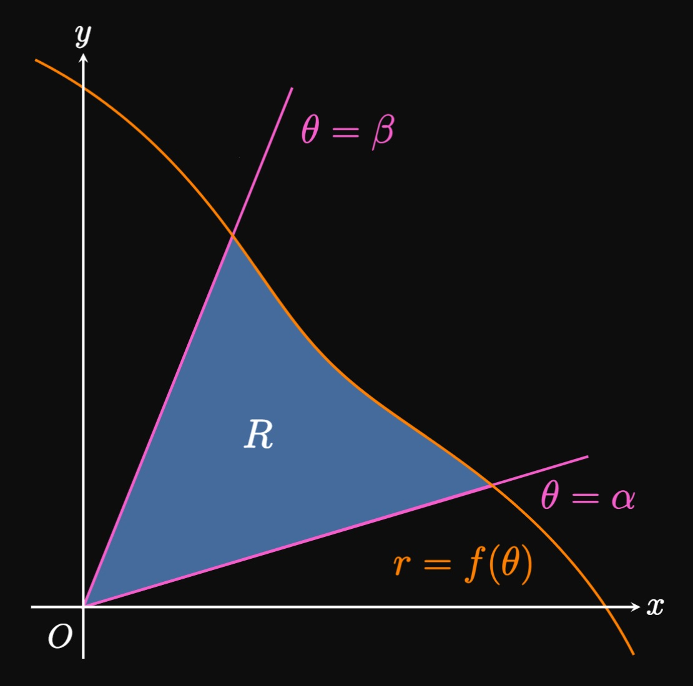
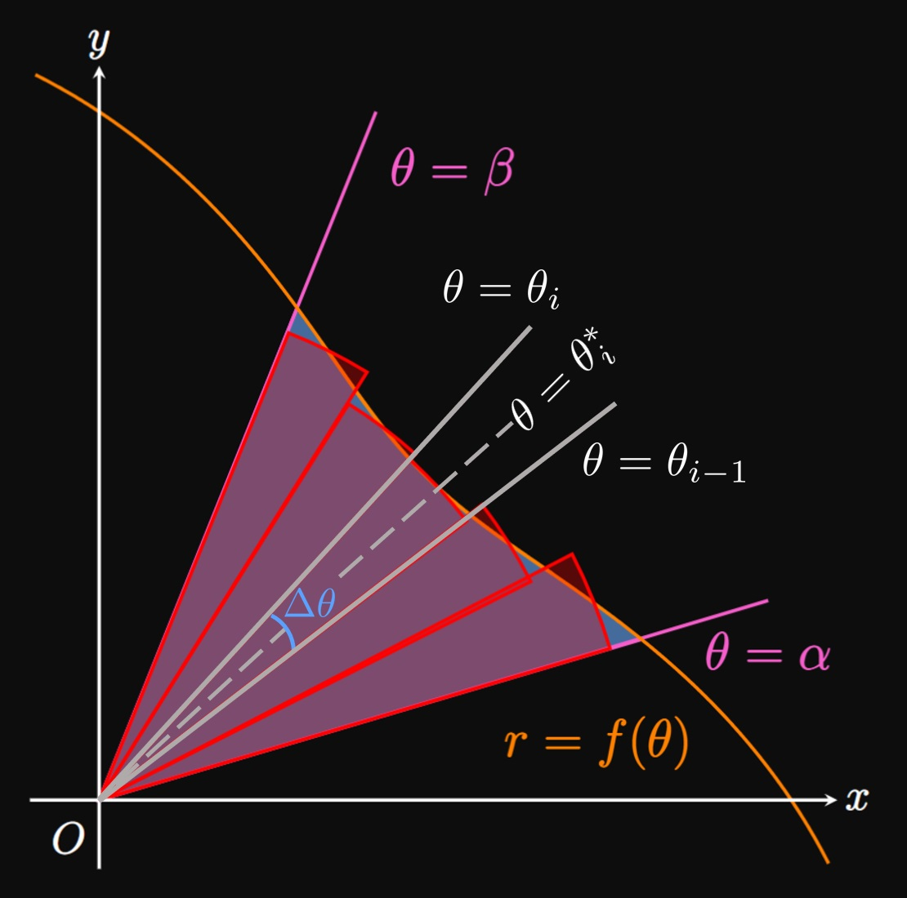
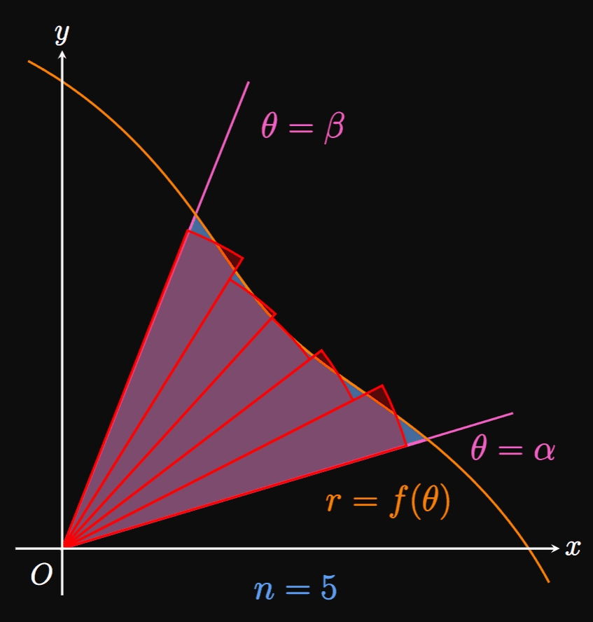
To determine the area of \(R,\) we use a method similar to a Riemann sum:
We cut the interval \([\alpha, \beta]\) into \(n\) equally sized subintervals
with endpoints \(\theta_1, \theta_2,\) \(\dots , \theta_{n - 1}, \theta_n.\)
Each subinterval has an angle measure of \(\Delta \theta\) \(= (\beta - \alpha)/n.\)
The area of each subinterval can be approximated by
a circular sector whose central angle is \(\Delta \theta.\)
In Figure 1B, an inscribed sector is
shown in the labeled subinterval \([\theta_{i - 1}, \theta_i].\)
Letting \(\theta_i^*\) be any sample point in \([\theta_{i - 1}, \theta_i],\)
the circular sector has area
\[\Delta A = \tfrac{1}{2} [f(\theta_i^*)]^2 \Delta \theta \pd\]
Hence, we approximate the total area of \(R\) by summing the areas of all \(n\) circular sectors
in \(\alpha \leq \theta \leq \beta\)—that is,
\[A \approx \sum_{i = 1}^n \tfrac{1}{2} [f(\theta_i^*)]^2 \Delta \theta \pd\]
If we increase \(n,\) then \(\Delta \theta \to 0\) and so
the many thinner circular sectors better fit into region \(R.\)
(See Animation 1.)
In fact, the exact area of \(R\) is the limiting value of \(A\) as \(n \to \infty \col\)
\[
A = \lim_{n \to \infty} \sum_{i = 1}^n \tfrac{1}{2} [f(\theta_i^*)]^2 \Delta \theta \pd
\]
This form is a Riemann sum for the function \(\tfrac{1}{2} [f(\theta)]^2,\) so we have
\begin{equation}
A = \int_\alpha^\beta \tfrac{1}{2} [f(\theta)]^2 \di \theta \pd \label{eq:area-A}
\end{equation}
CAUTION
It is easy to forget the exponent or the coefficient \(\tfrac{1}{2}\) in \(\eqref{eq:area-A}.\)
Over the interval \(\alpha \leq \theta \leq \beta,\)
be sure that the graph of \(r = f(\theta)\) only traces out a curve once.
If the graph stacks on top of itself over this interval, then
you need to alter the bounds to ensure a correct area.
Lastly, if \(\alpha \lt \beta\) then \(\eqref{eq:area-A}\) should never return a negative result,
regardless of the quadrant in which the region lies.
AREA BOUNDED BY A SINGLE POLAR CURVE
If \(r = f(\theta)\) is continuous and positive and traces out a curve once over \(\alpha \leq \theta \leq \beta,\)
then the area enclosed from \(\theta = \alpha\) to \(\theta = \beta\) is given by
\begin{equation}
A = \int_\alpha^\beta \tfrac{1}{2} [f(\theta)]^2 \di \theta \pd \eqlabel{eq:area-A}
\end{equation}
EXAMPLE 1
Calculate the area bounded by the polar graph \(r = \theta\)
over \(0 \leq \theta \leq \pi/2.\)
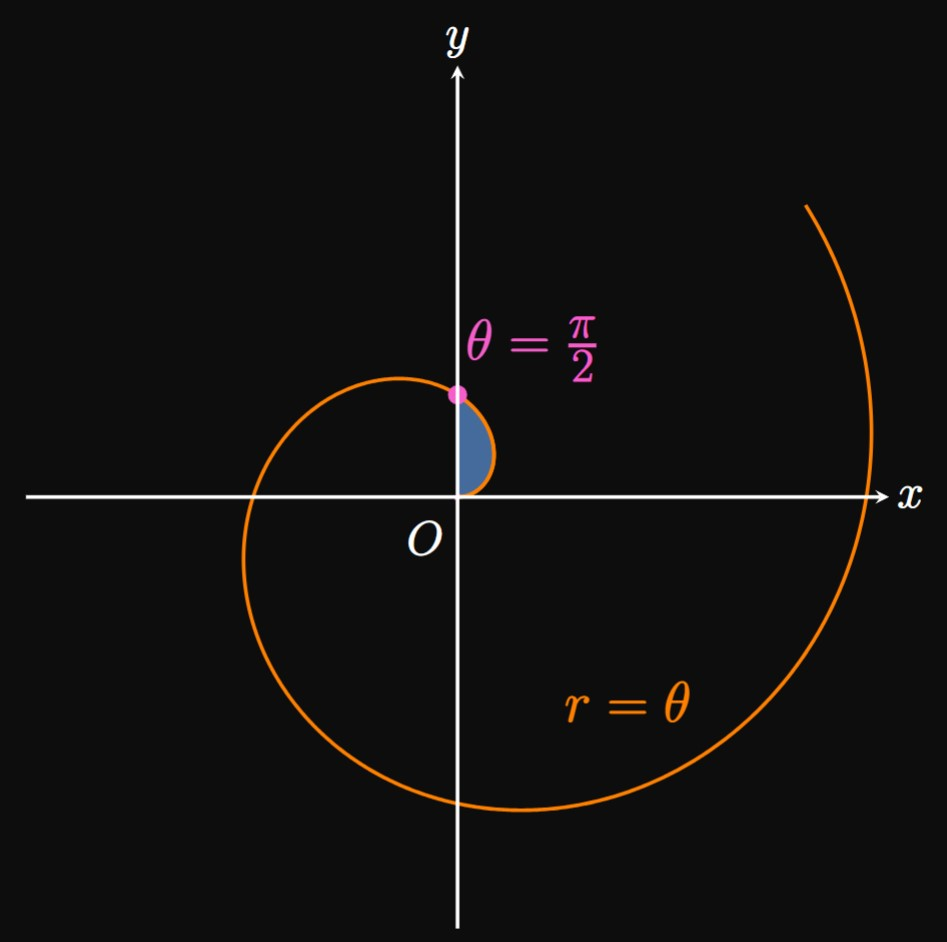
The graph of \(r = \theta\) is a spiral, and the bounded region is in the first
quadrant (Figure 2).
Accordingly, this region begins at the line \(\theta = 0\) and terminates at the line \(\theta = \pi/2.\)
So in \(\eqref{eq:area-A}\) we substitute \(\alpha = 0,\) \(\beta = \pi/2,\)
and \(f(\theta) = \theta\) to see
\[
\ba
A &= \int_0^{\pi/2} \tfrac{1}{2} (\theta)^2 \di \theta \nl
&= \tfrac{1}{6} \theta^3 \intEval_0^{\pi/2} = \tfrac{1}{6} \par{\frac{\pi}{2}}^3 - 0 \nl
&= \boxed{\frac{\pi^3}{48}}
\ea
\]
Ensure that you have a good understanding of polar graphs;
in the next examples, we will sketch polar curves.
If you need to review the types of polar graphs, then see
Section 9.4.
Since many polar graphs are defined using trigonometric functions,
it is common to work with powers of sine and cosine functions.
In Section 6.2 we discussed methods to deal with such integrals.
In particular, we used the power-reduction formulas to
simplify \(\sin^2 \theta\) and \(\cos^2 \theta,\) given as follows.
Determine the area enclosed by the cardioid \(r = 1 + \cos \theta.\)
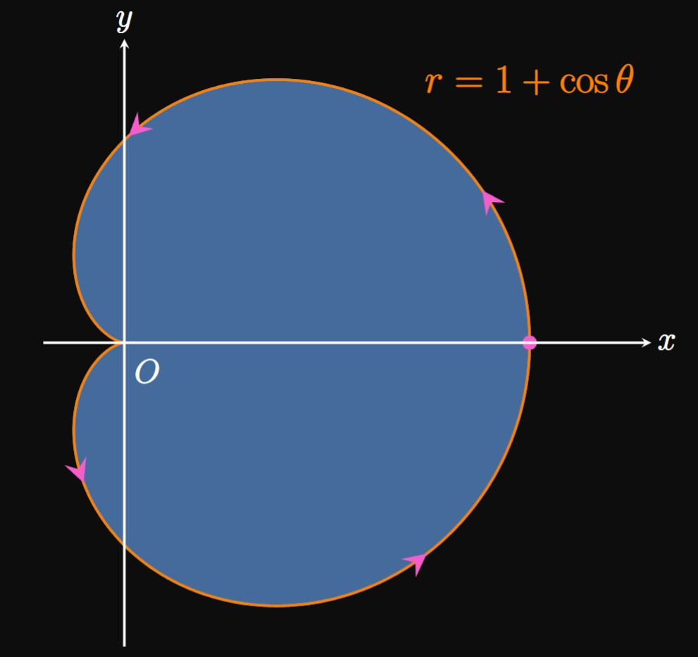
The entire cardioid is traced out once over the interval \(0 \leq \theta \leq 2 \pi\)
(Figure 3).
Accordingly, the bounds of integration are \(\alpha = 0\) to \(\beta = 2 \pi.\)
Thus, we use \(\eqref{eq:area-A}\) to calculate the area, as follows:
\[
\ba
A &= \tfrac{1}{2} \int_0^{2 \pi} \par{1 + \cos \theta}^2 \di \theta \nl
&= \tfrac{1}{2} \int_0^{2 \pi} \par{1 + 2 \cos \theta + \cos^2 \theta} \di \theta \nl
&= \tfrac{1}{2} \int_0^{2 \pi} \parbr{1 + 2 \cos \theta + \tfrac{1}{2} (1 + \cos 2 \theta)} \di \theta
&&[\text{by } \eqref{eq:cos-reduce}] \nl
&= \tfrac{1}{2} \int_0^{2 \pi} \par{\tfrac{3}{2} + 2 \cos \theta + \tfrac{1}{2} \cos 2 \theta} \di \theta \nl
&= \tfrac{1}{2} \par{\tfrac{3}{2} \theta + 2 \sin \theta + \tfrac{1}{4} \sin 2 \theta} \intEval_0^{2 \pi} \nl
&= \tfrac{1}{2} \parbr{\tfrac{3}{2} (2 \pi) + 2 \sin 2 \pi + \tfrac{1}{4} \sin 4 \pi} - 0
= \boxed{\tfrac{3}{2} \pi}
\ea
\]
EXAMPLE 3
Find the area of one petal of the rose \(r = \cos 2 \theta.\)
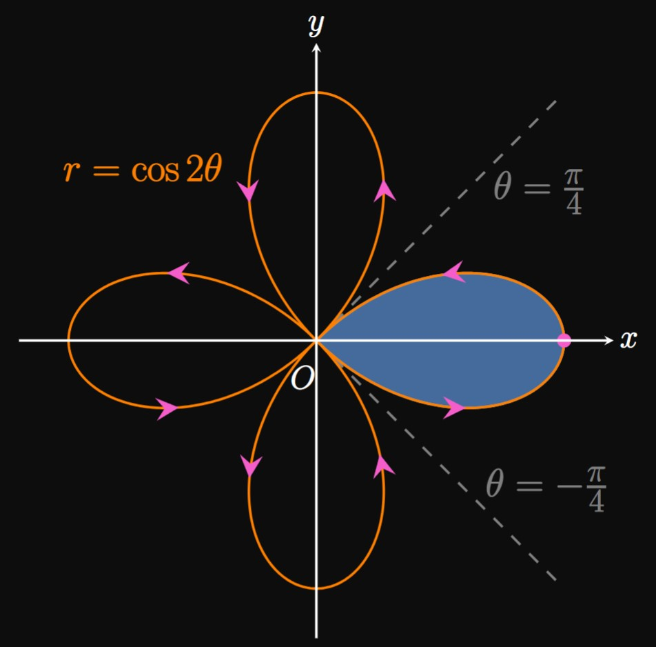
Let's calculate the area of the petal that resides on the positive \(x\)-axis.
To obtain the bounds \(\alpha\) and \(\beta,\) we determine when the graph hits the pole \(O\)—that
is, when \(r = 0.\)
Solving \(\cos 2 \theta = 0\) gives, for \(\theta\) in the first and fourth quadrants,
\(\theta = \pm \pi/4.\)
Hence, the graph of \(r = \cos 2 \theta\) traces out the top half of this petal over \(0 \leq \theta \leq \pi/4\)
and the bottom half over \(-\pi/4 \leq \theta \leq 0.\)
(See Figure 4.)
We therefore use \(\eqref{eq:area-A}\) with the limits \(\alpha = -\pi/4\) and \(\beta = \pi/4.\)
Doing so gives the petal's area to be
\[A = \tfrac{1}{2} \int_{-\pi/4}^{\pi/4} \cos^2 2\theta \di \theta \pd\]
But by symmetry, the petal's area is double the area of the top half.
Accordingly, we can simplify the calculation as follows:
\[
\ba
A = 2 \cdot \tfrac{1}{2} \int_0^{\pi/4} \cos^2 2 \theta \di \theta
&= \int_0^{\pi/4} \cos^2 2 \theta \di \theta \nl
&= \tfrac{1}{2} \int_0^{\pi/4} (1 + \cos 4 \theta) \di \theta &&[\text{by } \eqref{eq:cos-reduce}] \nl
&= \tfrac{1}{2} \par{\theta + \tfrac{1}{4} \sin 4 \theta} \intEval_0^{\pi/4} \nl
&= \tfrac{1}{2} \par{\frac{\pi}{4} + \tfrac{1}{4} \sin \pi} - 0 = \boxed{\frac{\pi}{8}}
\ea
\]
EXAMPLE 4
Find the area of the inner loop of the limacon \(r = 1 + 2 \sin \theta.\)
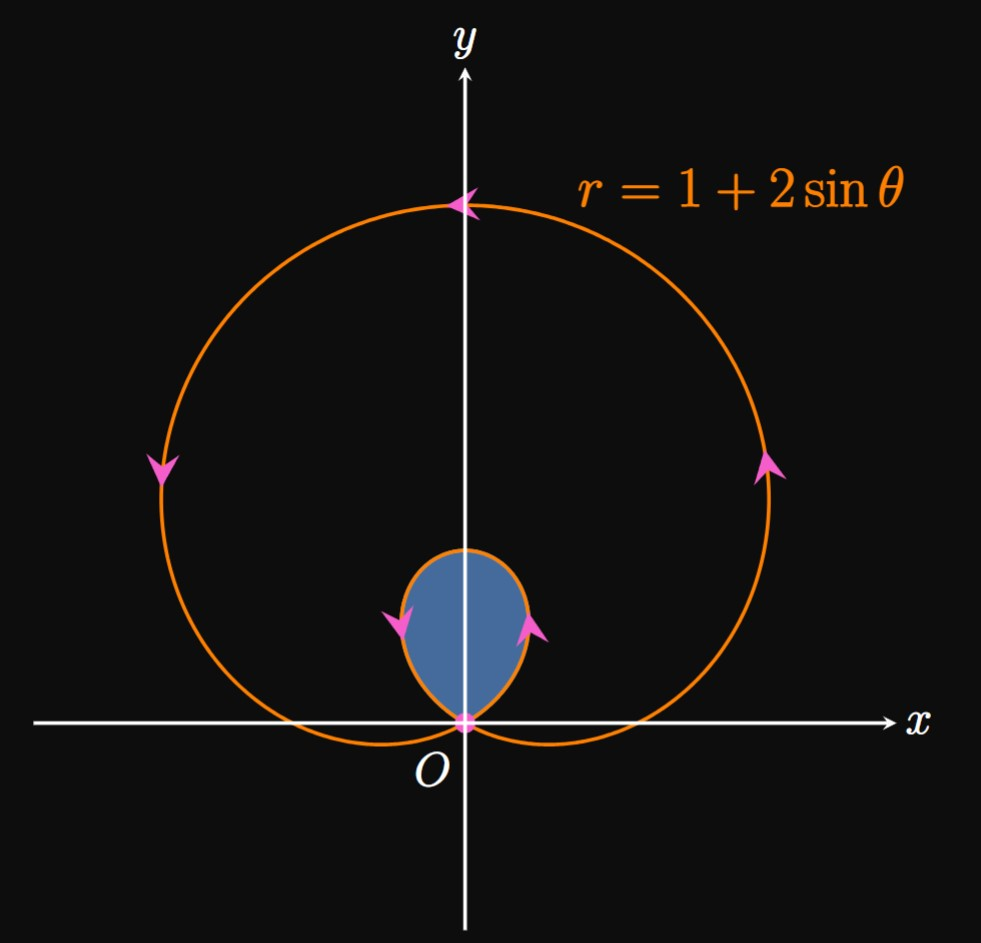
The graph of the limacon \(r = 1 + 2 \sin \theta\) is symmetric about the \(y\)-axis
(Figure 5).
To find the interval over which the inner loop is traced,
we solve for the values of \(\theta\) at which the graph touches the pole—namely, when \(r = 0 \col\)
\[
\ba
1 + 2 \sin \theta &= 0 \nl
\sin \theta &= -\tfrac{1}{2} \nl
\implies \theta &= \frac{7 \pi}{6} \cma \frac{11 \pi}{6} \pd
\ea
\]
Hence, the inner loop is traced out over \(7 \pi/6 \leq \theta \leq 11 \pi/6,\)
so we use the bounds \(\alpha = 7 \pi/6\) and \(\beta = 11 \pi/6.\)
Accordingly, by \(\eqref{eq:area-A}\) an expression for the area is
\[A = \tfrac{1}{2} \int_{7 \pi/6}^{11 \pi/6} \par{1 + 2 \sin \theta}^2 \di \theta \pd\]
Expanding the integrand and applying the power-reduction formula for sine
enable us to calculate the area, as follows:
\[
\ba
A &= \tfrac{1}{2} \int_{7 \pi/6}^{11 \pi/6} \par{1 + 4 \sin \theta + 4 \sin^2 \theta} \di \theta \nl
&= \tfrac{1}{2} \int_{7 \pi/6}^{11 \pi/6} \parbr{1 + 4 \sin \theta + 4 \cdot \tfrac{1}{2} (1 - \cos 2 \theta)} \di \theta
&&[\text{by } \eqref{eq:sin-reduce}] \nl
&= \tfrac{1}{2} \int_{7 \pi/6}^{11 \pi/6} \par{3 + 4 \sin \theta - 2 \cos 2 \theta} \di \theta \nl
&= \tfrac{1}{2} \par{3 \theta - 4 \cos \theta - \sin 2 \theta} \intEval_{7 \pi/6}^{11 \pi/6} \nl
&= \tfrac{1}{2} \par{ \frac{11 \pi}{2} - 2 \sqrt 3 + \frac{\sqrt 3}{2} }
- \tfrac{1}{2} \par{ \frac{7 \pi}{2} + 2 \sqrt{3} - \frac{\sqrt 3}{2} } \nl
&= \boxed{\pi - \frac{3 \sqrt 3}{2}} \approx 0.544 \pd
\ea
\]
Areas between Two Polar Curves
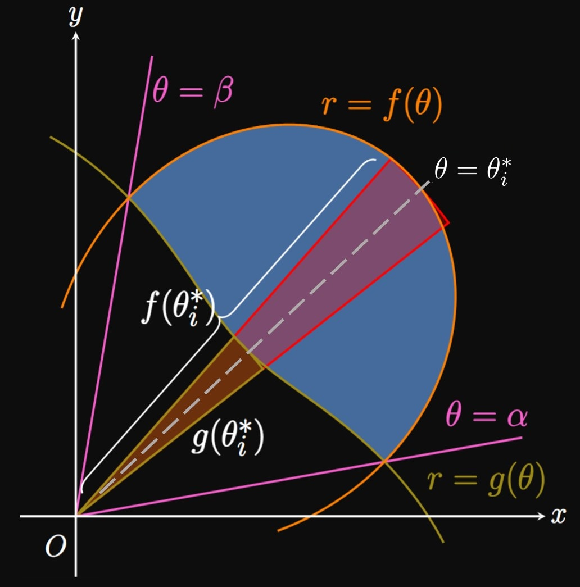
Suppose that \(f\) and \(g\) are positive, continuous functions
over \([\alpha, \beta].\)
If \(f(\theta) \geq g(\theta)\) over \(\alpha \leq \theta \leq \beta,\)
then the polar graphs of both functions enclose a region of area \(A.\)
The curve \(r = f(\theta)\) is called the outer boundary function
(because it's farther from the origin),
and the curve \(r = g(\theta)\) is the inner boundary function.
To calculate \(A\) we do the following:
We take the area bounded by \(f\) over \(\alpha \leq \theta \leq \beta\)
and subtract the area bounded by \(g\) over \(\alpha \leq \theta \leq \beta.\)
In Figure 6, for a subinterval \([\theta_{i - 1}, \theta_i]\)
with sample point \(\theta_i^*,\) we subtract
the area of the inner sector from the area of the outer sector.
The difference in areas is therefore
\[\Delta A = \tfrac{1}{2} [f(\theta_i^*)]^2 \Delta \theta - \tfrac{1}{2} [g(\theta_i^*)]^2 \Delta \theta \pd\]
Summing the differences in areas of \(n\) sectors throughout the entire interval \(\alpha \leq \theta \leq \beta,\)
we see
\[
A \approx \sum_{i = 1}^n \tfrac{1}{2} [f(\theta_i^*)]^2 \Delta \theta - \sum_{i = 1}^n \tfrac{1}{2} [g(\theta_i^*)]^2 \Delta \theta \pd
\]
The total area of \(A\) is the limiting value of this sum as \(n \to \infty.\)
The first summation is a Riemann sum for \(\tfrac{1}{2} [f(\theta)]^2,\)
and the second summation is a Riemann sum for \(\tfrac{1}{2} [g(\theta)]^2.\)
We therefore have
\begin{align}
A &= \int_\alpha^\beta \tfrac{1}{2} [f(\theta)]^2 \di \theta
- \int_\alpha^\beta \tfrac{1}{2} [g(\theta)]^2 \di \theta \nonum \nl
&= \tfrac{1}{2} \int_\alpha^\beta \par{[f(\theta)]^2 - [g(\theta)]^2} \di \theta \pd \label{eq:polar-area-2}
\end{align}
In this formula,
the integrand is the outer boundary function squared minus the inner boundary function squared.
AREA BOUNDED BY TWO POLAR CURVES
If \(f\) and \(g\) are positive, continuous functions on \([\alpha, \beta]\)
such that \(f(\theta) \geq g(\theta)\) on \(\alpha \leq \theta \leq \beta,\)
then the area enclosed by the polar graphs \(r = f(\theta)\) and \(r = g(\theta)\)
over \(\alpha \leq \theta \leq \beta\) is given by
\begin{equation}
A = \tfrac{1}{2} \int_\alpha^\beta \par{[f(\theta)]^2 - [g(\theta)]^2} \di \theta \pd \eqlabel{eq:polar-area-2}
\end{equation}
EXAMPLE 5
Calculate the area of the region that is outside the cardioid \(r = 1 + \sin \theta\)
and also inside the circle \(r = 3 \sin \theta.\)
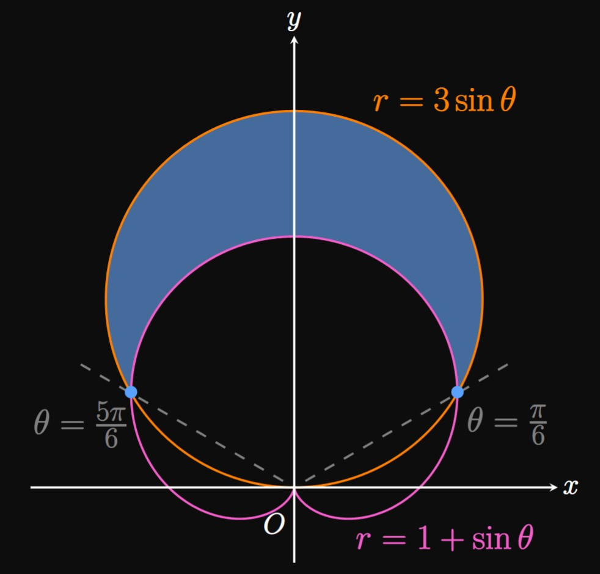
It is imperative to sketch the two graphs
and label the enclosed area, which resembles a rotated moon,
as shown by Figure 7.
Equating the two functions \(r = 1 + \sin \theta\) and \(r = 3 \sin \theta\) shows
\[
\ba
1 + \sin \theta &= 3 \sin \theta \nl
\sin \theta &= \tfrac{1}{2} \nl
\implies \theta &= \frac{\pi}{6} \cma \frac{5 \pi}{6} \pd
\ea
\]
Thus, these graphs intersect at \(\theta = \pi/6\) and \(\theta = 5 \pi/6.\)
Imagine a ray rotating counterclockwise about the pole \(O\) and sweeping out the region
over \(\pi/6 \leq \theta \leq 5 \pi/6.\)
Over this interval the outer boundary function is \(f(\theta) = 3 \sin \theta\)
(since this curve is farther from the origin),
and the inner boundary function is \(g(\theta) = 1 + \sin \theta.\)
Accordingly, by \(\eqref{eq:polar-area-2}\) the enclosed area is given by the integral
\[A = \tfrac{1}{2} \int_{\pi/6}^{5 \pi/6} \parbr{(3 \sin \theta)^2 - (1 + \sin \theta)^2} \di \theta \pd\]
Expanding and using the power-reduction formula for sine, we see
\[
\ba
A &= \tfrac{1}{2} \int_{\pi/6}^{5 \pi/6} \par{9 \sin^2 \theta - 1 - 2 \sin \theta - \sin^2 \theta} \di \theta \nl
&= \tfrac{1}{2} \int_{\pi/6}^{5 \pi/6} \par{8 \sin^2 \theta - 2 \sin \theta - 1} \di \theta \nl
&= \tfrac{1}{2} \int_{\pi/6}^{5 \pi/6} \parbr{8 \cdot \tfrac{1}{2}(1 - \cos 2 \theta) - 2 \sin \theta - 1} \di \theta
&&[\text{by } \eqref{eq:sin-reduce}] \nl
&= \tfrac{1}{2} \int_{\pi/6}^{5 \pi/6} \par{3 - 4 \cos 2 \theta - 2 \sin \theta} \di \theta \nl
&= \tfrac{1}{2} \par{3 \theta - 2 \sin 2 \theta + 2 \cos \theta} \intEval_{\pi/6}^{5 \pi/6} = \boxed \pi
\ea
\]
Let's develop some problem-solving tips for calculating areas bounded between polar curves.
Example 5 shows an example in which one curve \(f\)
is constantly greater than another curve \(g\) over some interval.
But if this isn't the case, then we must split the region and add integrals.
Consider the following steps.
STEPS FOR CALCULATING AREAS BOUNDED BETWEEN POLAR GRAPHS
Sketch the polar graphs, label the intersection points, and shade the bounded region.
Trace the perimeter of the bounded region counterclockwise,
and imagine a ray rotating through the origin
sweeping out the area.
Identify the outer boundary function \(f(\theta)\)
and the inner boundary function \(g(\theta);\)
split the region if the boundary functions differ throughout the interval.
Calculate the values of \(\theta\) at which the polar graphs intersect
by solving \(f(\theta) = g(\theta).\)
Use \(\eqref{eq:polar-area-2}\) as necessary to calculate the area of the bounded region,
with \(\alpha\) and \(\beta\) being angles of intersection.
EXAMPLE 6
Calculate the area of the region that is inside the circle \(r = 2\)
and also inside the limacon \(r = 2 + \sin \theta.\)
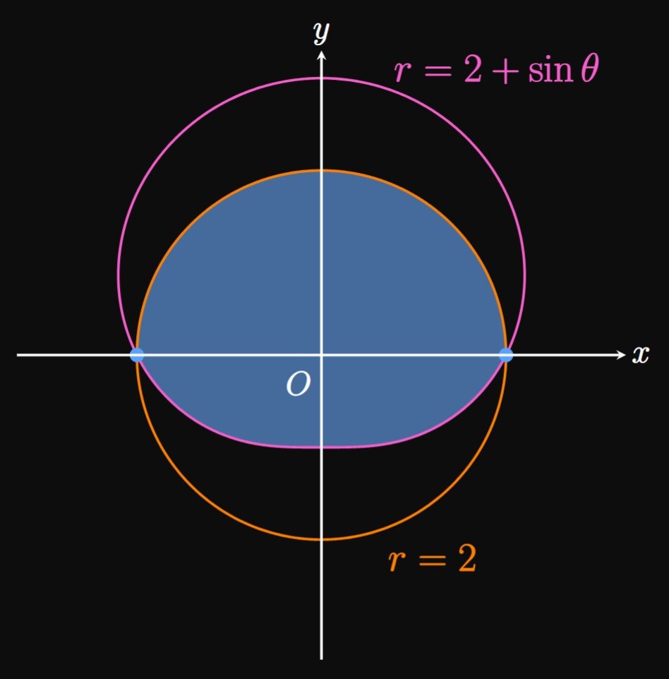
We plot the two curves and shade the area inside the circle and also inside the limacon,
as shown by Figure 8.
If we imagine a ray rotating counterclockwise about the pole \(O\)
and sweeping out the area, then we see the following:
Over \(0 \leq \theta \leq \pi,\)
the enclosed region is bounded only by the circle \(r = 2.\)
Over \(\pi \leq \theta \leq 2 \pi,\)
the region is bounded solely by the limacon \(r = 2 + \sin \theta.\)
In fact, the top half of the enclosed region is a semicircle of area \(\tfrac{1}{2} \pi(2)^2 = 2 \pi.\)
We add this result to the area of the bottom half of the enclosed area,
so the total area is given by
\[
A = 2 \pi + \tfrac{1}{2} \int_\pi^{2 \pi} \par{2 + \sin \theta}^2 \di \theta \pd
\]
Expanding the integrand and using the power-reduction formula for sine, we see
\[
\ba
A &= 2 \pi + \tfrac{1}{2} \int_\pi^{2 \pi} \par{4 + 4 \sin \theta + \sin^2 \theta} \di \theta \nl
&= 2 \pi + \tfrac{1}{2} \int_\pi^{2 \pi} \parbr{4 + 4 \sin \theta + \tfrac{1}{2} (1 - \cos 2 \theta)} \di \theta
&&[\text{by } \eqref{eq:sin-reduce}] \nl
&= 2 \pi + \tfrac{1}{2} \int_\pi^{2 \pi} \par{\tfrac{9}{2} + 4 \sin \theta - \tfrac{1}{2} \cos 2 \theta} \di \theta \nl
&= 2 \pi + \tfrac{1}{2} \par{\tfrac{9}{2} \theta - 4 \cos \theta - \tfrac{1}{4} \sin 2 \theta} \intEval_\pi^{2 \pi} \nl
&= \boxed{\frac{17 \pi}{4} - 4} \approx 9.352 \pd
\ea
\]
REMARK
Over each interval \(0 \leq \theta \leq \pi\)
and \(\pi \leq \theta \leq 2 \pi,\)
only one boundary function is present.
It is not appropriate to model the region
using an outer boundary function and inner boundary function.
We therefore split the region
at \(\theta = \pi,\) the point
at which the boundary functions change,
and add the areas.
In fact, we could use integrals to write the area as
\[A = \tfrac{1}{2} \int_0^\pi 2^2 \di \theta + \tfrac{1}{2} \int_\pi^{2 \pi} \par{2 + \sin \theta}^2 \di \theta \cma\]
where the first interval evaluates to \(2 \pi.\)
Regardless,
it would be wrong to take the difference of areas using \(\eqref{eq:polar-area-2}.\)
EXAMPLE 7
Calculate the area bounded between the two circles \(r = 3 \cos \theta\)
and \(r = 3 \sin \theta.\)
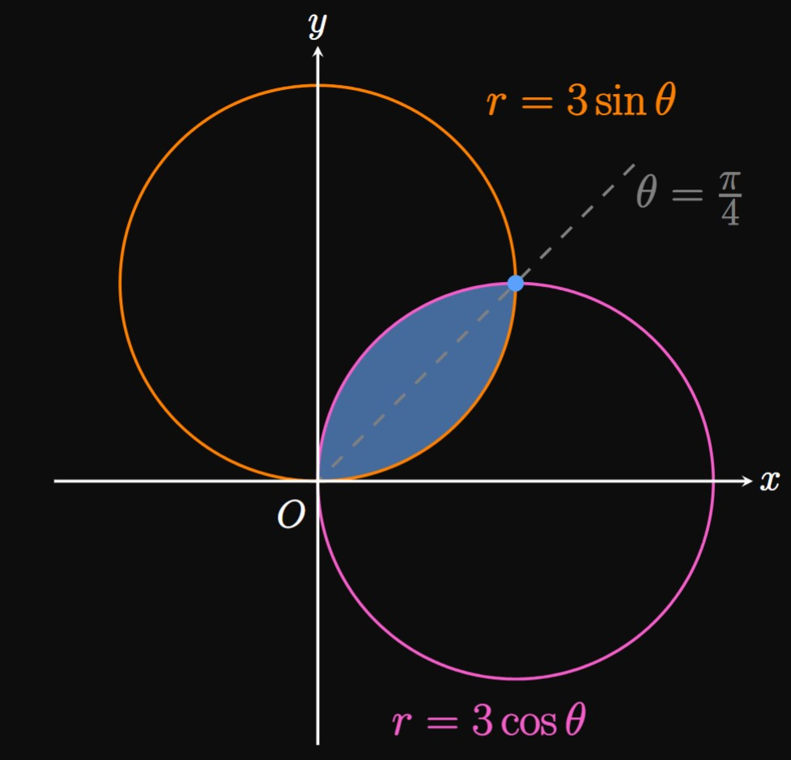
Sketching the graphs of \(r = 3 \cos \theta\) and \(r = 3 \sin \theta,\)
we identify the bounded region to be in the first quadrant.
Note that these circles intersect when \(3 \sin \theta = 3 \cos \theta,\)
which occurs in the first quadrant when \(\theta = \pi/4.\)
Starting at the origin, we trace the perimeter of the enclosed region and imagine
a ray sweeping out this region.
We see the following:
Over \(0 \leq \theta \leq \pi/4,\)
the region is bounded by the circle \(r = 3 \sin \theta.\)
Over \(\pi/4 \leq \theta \leq \pi/2,\)
the region is bounded by the other circle \(r = 3 \cos \theta.\)
Because the boundary functions change at \(\theta = \pi/4,\)
we split the region at \(\theta = \pi/4\) and add the subregions' areas:
\[
A = \tfrac{1}{2} \int_0^{\pi/4} (3 \sin \theta)^2 \di \theta
+ \tfrac{1}{2} \int_{\pi/4}^{\pi/2} (3 \cos \theta)^2 \di \theta \pd
\]
By symmetry, both subregions have the same area and so both integrals are equivalent.
The area is therefore given by double the value of one integral—say,
\[
\ba
A &= 2 \cdot \tfrac{1}{2} \int_0^{\pi/4} (3 \sin \theta)^2 \di \theta \nl
&= 9 \int_0^{\pi/4} \sin^2 \theta \di \theta = 9 \int_0^{\pi/4} \tfrac{1}{2}(1 - \cos 2 \theta) \di \theta \nl
&= \tfrac{9}{2} \par{\theta - \tfrac{1}{2} \sin 2 \theta} \intEval_0^{\pi/4} \nl
&= \boxed{\frac{9 \pi - 18}{8}} \approx 1.284 \pd
\ea
\]
EXAMPLE 8
Determine the area of the region that lies inside the circle \(r = \cos \theta\)
and outside the cardioid \(r = 1 - \cos \theta.\)
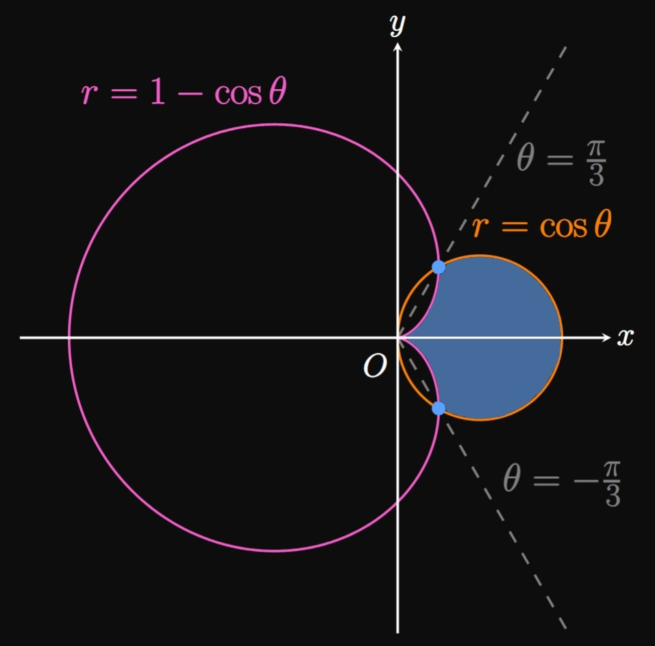
Sketching the graphs, we identify the enclosed area to lie within the first and fourth quadrants
(Figure 10).
If we trace the perimeter of the region, then we see
that its outer boundary function is \(f(\theta) = \cos \theta\)
and its inner boundary function is \(g(\theta) = 1 - \cos \theta.\)
These two graphs intersect when \(\cos \theta = 1 - \cos \theta,\)
which occurs when \(\theta = \pm \pi/3.\)
Accordingly, in \(\eqref{eq:polar-area-2}\) we use the bounds \(\alpha = -\pi/3\)
and \(\beta = \pi/3,\)
so the area is given by
\[A = \tfrac{1}{2} \int_{-\pi/3}^{\pi/3} \parbr{(\cos \theta)^2 - (1 - \cos \theta)^2} \di \theta \pd\]
But by symmetry, we can simplify the calculation as follows:
\[
\ba
A &= 2 \cdot \tfrac{1}{2} \int_0^{\pi/3} \parbr{(\cos \theta)^2 - (1 - \cos \theta)^2} \di \theta \nl
&= \int_0^{\pi/3} \par{\cos^2 \theta - 1 + 2 \cos \theta - \cos^2 \theta} \di \theta \nl
&= \int_0^{\pi/3} \par{2 \cos \theta - 1} \di \theta
= \par{2 \sin \theta - \theta} \intEval_0^{\pi/3} \nl
&= \boxed{\sqrt{3} - \frac{\pi}{3}} \approx 0.685 \pd
\ea
\]
Area Bounded by a Single Polar Curve
If \(r = f(\theta)\) is continuous and positive and traces a curve once over \(\alpha \leq \theta \leq \beta,\)
then the area enclosed from \(\theta = \alpha\) to \(\theta = \beta\) is given by
\begin{equation}
A = \int_\alpha^\beta \tfrac{1}{2} [f(\theta)]^2 \di \theta \pd \eqlabel{eq:area-A}
\end{equation}
Do not forget the exponent or the coefficient \(\tfrac{1}{2}.\)
This formula should never return a negative value, regardless of the quadrant in which the region lies.
Areas between Two Polar Curves
If \(f\) and \(g\) are positive, continuous functions on \([\alpha, \beta]\)
such that \(f(\theta) \geq g(\theta)\) on \(\alpha \leq \theta \leq \beta,\)
then the area enclosed by the polar graphs \(r = f(\theta)\) and \(r = g(\theta)\)
over \(\alpha \leq \theta \leq \beta\) is given by
\begin{equation}
A = \tfrac{1}{2} \int_\alpha^\beta \par{[f(\theta)]^2 - [g(\theta)]^2} \di \theta \pd \eqlabel{eq:polar-area-2}
\end{equation}
The following steps help us calculate the area between two polar curves:
Sketch the polar graphs, label the intersection points, and shade the bounded region.
Trace the perimeter of the bounded region counterclockwise,
and imagine a ray rotating through the origin
sweeping out the area.
Identify the outer boundary function \(f(\theta)\)
and the inner boundary function \(g(\theta);\)
split the region if the boundary functions differ throughout the interval.
Calculate the values of \(\theta\) at which the polar graphs intersect
by solving \(f(\theta) = g(\theta).\)
Use \(\eqref{eq:polar-area-2}\) as necessary to calculate the area of the bounded region,
with \(\alpha\) and \(\beta\) being angles of intersection.